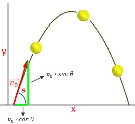
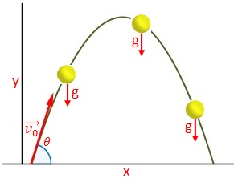
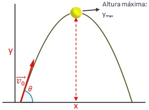
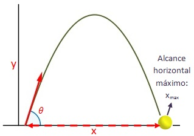

FISICA
TIRO PARABOLICO
El movimiento parabólico es el movimiento de una partícula o cuerpo rígido describiendo su trayectoria una parábola. Por ejemplo, el balón de fútbol cuando es chutado por un jugador y cae al suelo es un movimiento parabólico. El movimiento parabólico se puede analizar como la unión de dos movimientos. Por un lado, la trayectoria en la proyección del eje de las x (el eje que va paralelo al suelo) describirá un movimiento rectilíneo uniforme. Por otro lado, la trayectoria de la partícula al elevarse o caer verticalmente (en proyección sobre el eje de las y) describirá un movimiento rectilíneo uniformemente acelerado, donde la aceleración es la gravedad.Nota: la gravedad normalmente se considera g = 9.81 m/s2. Para hacernos una idea visual de los dos componentes del movimiento parabólico, imaginemos un lanzamiento de peso de atletismo. Si pudiésemos seguir el recorrido de la bola verticalment desde arriba, en el mismo plano vertical de la trayectoria, desde esa posición privilegiada veríamos la bola avanzar a una velocidad constante, desde la salida de la mano del atleta hasta que la bola toca el césped. Apreciaríamos un movimiento rectilíneo uniforme (velocidad constante). Pero si nos pudiésemos situar sobre el césped, detrás de donde se ubican los jueces y que estuviésemos también justo en el plano vertical de la trayectoria (es decir, que lanzase hacia nosotros) nos daría la impresión de que la bola sube y baja como si se tratase de un lanzamiento vertical hacia arriba (movimiento rectilíneo uniformement acelerado). Una de las aplicaciones más importantes del movimiento parabólico es la balística. La balística es la ciencia que estudia la trayectoria de las balas o proyectiles. Ciertos proyectiles son lanzados desde un cañón con un ángulo determinado calculado para que el proyectil recorra una parábola e impacte en el objetivo esperado. (Nota: estudiamos aquí el movimiento parabólico aplicado a la balística desde un punto de vista teórico. En la práctica, la balística debe de corregir los cálculos en función de otros factores, como el rozamiento del proyectil con la atmósfera, el viento, la presión atmosférica, la esfericidad y la rotación de la tierra, etc.). 
TIPOS DE MOVIMIENTO
- Movimiento parabólico completo: el cuerpo recorre una parábola completa, empezando y acabando en el suelo.
- Movimiento de media parábola: el cuerpo empieza el movimiento desde cierta altura y es lanzado parabólicamente con una fuerza horizontal, en un punto que sería el punto más alto de la parábola completa ideal.
- Otros movimientos parabólicos: existen muchos casos particulares del movimiento parabólico, por ejemplo el lanzamiento de una pelota desde el suelo a la terraza de una casa o el lanzamiento a canasta de un jugador de baloncesto. Siempre son tramos de una teórica parábola completa.
VELOCIDAD
La velocidad inicial del cuerpo (v0) tiene dos componentes, la componente horizontol, en el eje x y la componente vertical, en el eje vertical y. Depende de la fuerza con la que salga la partícula y el ángulo de lanzamiento.
La componente horizontal de la velocidad x será constante, ya que es un movimiento uniforme. La componente vertical de la velocidad y disminuye inicialmente por la gravedad, hasta hacerse nula en el punto más alto de la trayectoria. A partir de ese punto, vuelve a crecer uniformemente acelerada por la gravedad.
ACELERACION
La aceleración solamente está presente en la componente vertical. El movimiento horizontal es uniforme mientras que sobre la componente y influye la aceleración de la gravedad, que hace que se frene el cuerpo (en el caso de que esté subiendo) hasta volver a acelerarse al descender y caer al suelo.

POSICION
En la posición del objeto también intervienen las fórmulas de la posición del movimiento rectilíneo uniforme (sentido horizontal) y la posición del movimiento rectilíneo uniformemente acelerado (sentido vertical). igual velocidad inicial y aceleración de la gravedad, la altura máxima de una trayectoria parabólica dependerá del ángulo θ de la velocidad inicial v0. La máxima altura que se puede alcanzar con una velocidad v0 determinada se corresponde con un ángulo de lanzamiento θ = 90°.
ALTURA MAXIMA
En el movimiento parabólico, existe un punto (y sólo un punto) donde la partícula se encuentra en el punto más alto de su trayectoria. En ese punto, la componente vertical de la velocidad es nula. La fórmula para determinar la altura máxima no depende del tiempo. A igual velocidad inicial y aceleración de la gravedad, la altura máxima de una trayectoria parabólica dependerá del ángulo θ de la velocidad inicial v0. La máxima altura que se puede alcanzar con una velocidad v0 determinada se corresponde con un ángulo de lanzamiento θ = 90°.

ALCANCE HORIZONTAL MAXIMO
La partícula o cuerpo llegará a su alcance horizontal máximo cuando caiga al suelo, es decir, cuando y sea cero. Podemos calcular el alcance sin saber el tiempo que ha tardado en recorrer la parábola la partícula o conociéndolo. Fórmula del alcance siendo el tiempo de trayectoria de la partícula desconocido.(Para comprovar la deducción de esta fórmula,consultar razones trigonométricas del ángulo doble) El alcance máximo que se podrà lograr con un proyectil (a igual velocidad inicial v0), será con un ángulo θ = 45°. Por ejempo, se obtendrá el mismo alcance horizontal para ángulos de lanzamiento θ = 45° ± m. El proyectil tendrá el mismo alcance, tanto si se lanza con ángulos θ = 45° ± 15°, es decir θ = 30° y θ = 60°, ya que sen(2 · 30°) = sen(2 · 60°). Idénticos alcances se obtendrán con ángulos θ = 45° ± 30°, es decir θ = 15° y θ = 75°, puesto que sen(2 · 15°) = sen(2 · 75°). Y es que en la fórmula interviene sen(2θ). Pero, insistimos, el alcance máximo se logra con θ = 45°.Llamamos tiempo de vuelo (Tvuelo) al que invierte el cuerpo o el proyectil en realizar el movimiento completo hasta llegar a tierra, es decir a la misma altura del punto de salida. 